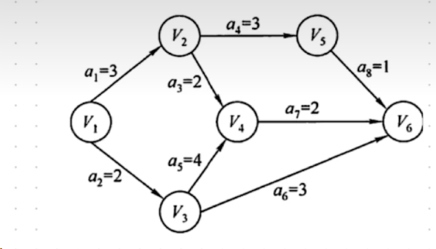
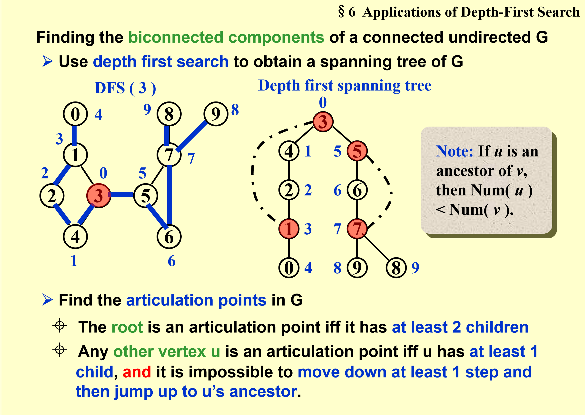
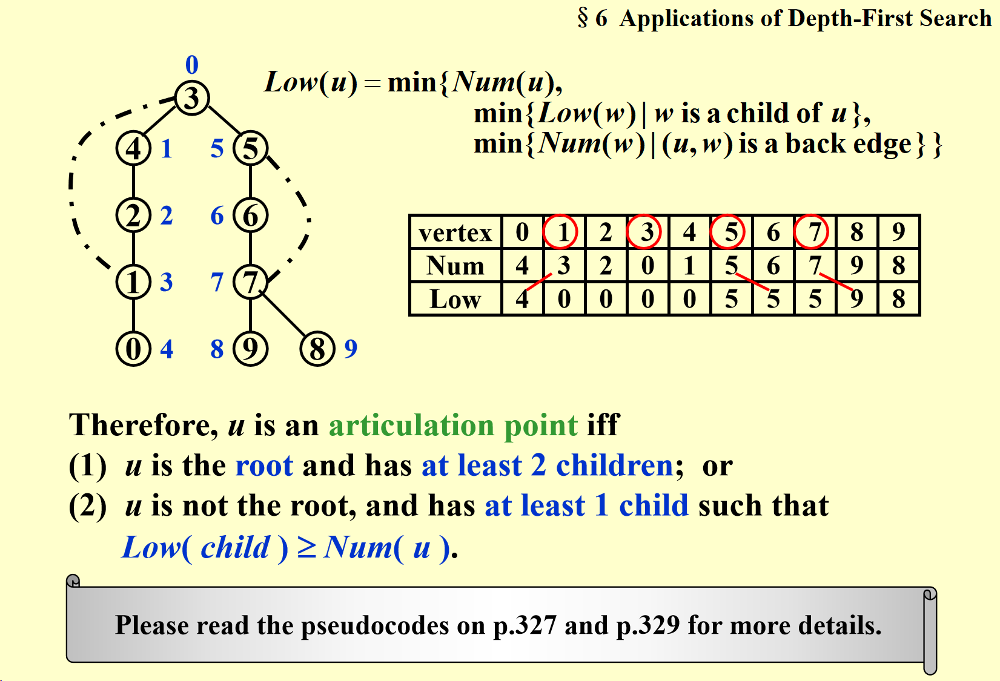

# FDS 复习
# 期中模拟卷
# 1. is .
T
# 2.In Union/Find algorithm, if Unions are done by size, the depth of any node must be no more than N/2 , but not .
F
每做一次归并，都会使得小的集合深度加 1，但是总的深度还是看大的集合。只有深度相同的归并才能使得总的深度加 1，2,2 归并，深度变为 3；3,3 归并深度变为 4。因此深度最大为 ****.
# 3.For a sequentially stored linear list of length N, the time complexities for query and insertion are:
C.,.
注意是顺序存储，因此查询只需要, 插入需要调整后面的元素的位置，因此是.
# 4.The following figure shows the AOE network of a project with 8 activities. The earliest and the latest start times of the activity d are __, respectively.

还没学，下次再来补
# 5.If besides finding the shortest path from S to every other vertices, we also need to count the number of different shortest paths, we can modify the Dijkstra algorithm in the following way: add an array count[] so that count[V] records the number of different shortest paths from S to V . Then count[V] shall be initialized as:
A. count[S]=1; and count[V]=0 for other V
还没学应该不考，下次再来补
# 6. 程序填空题 Reverse Linked List
The function is to return the reverse linked list of L , with a dummy head.
1 | List Reverse( List L ) |
先把下一个节点用 temp 存起来，然后把当前节点指向上一个节点，然后移动上一个节点的指针到当前节点，把当前节点指针移动到下一节点。
# 7. 程序填空题 MinHeap Deletion
Please fill in the blanks in the program which deletes a given element at position p from a min-heap H .
1 | Deletion ( PriorityQueue H, int p ) /* delete the element H->Elements[p] */ |
# HW1
# 1-2 The Fibonacci number sequence {} is defined as: , N=2, 3, … The time complexity of the function which calculates recursively is .
F
递归求斐波那契数的时间复杂度是.
二叉树的高度是 n-1，一个高度为 k 的二叉树最多可以由 个叶子节点，也就是递归过程函数调用的次数，所以时间复杂度为 ，而空间复杂度就是树的高度 .
# 2-1 Given the following four algorithms with their runtimes for problem size 100 and their time complexities:
| Algorithm | Runtime | Time Complexity |
|---|---|---|
| A | 100 | |
| B | 50 | |
| C | 2 | |
| D | 10 |
Which algorithm is the fastest for problem size 200?
D
200 = 100*2
A 100*2 = 200
B 50 * =200
C 25*=200
D 10*=160 最快
# 2-3 The recurrent equations for the time complexities of programs P1 and P2 are:
- P1: T(1)=1,T(N)=T(N/3)+1
- P2: T(1)=1,T(N)=3T(N/3)+1
Then the correct conclusion about their time complexities is:
A.they are both O(logN)
B.O*(log*N) for P1, O(N) for P2
C.they are both O(N)
D.O(logN) for P1, O(NlogN) for P2
B
# R1-2 is .
T
记住即可
# R1-3 The time comlexity of Selection Sort will be the same no matter we store the elements in an array or a linked list.
T
# HW2
# 1-1 For a sequentially stored linear list of length N, the time complexities for deleting the first element and inserting the last element are O(1) and O(N), respectively.
F
注意是顺序存储的。删除第一个节点需要把后面的都往前移动一个位置，所以是，插入最后一个节点是。
对于顺序存储的长度为 N 的线性表，访问节点的时间复杂度是（线性存储，直接按标号访问就可以了），插入的时间复杂度是（要调整后面的元素的位置）。
# 2-3 To merge two singly linked ascending lists, both with N nodes, into one singly linked ascending list, the minimum possible number of comparisons is:
B.
最少比较的次数就是第一个链表的每个节点都和第二个链表的头节点比较一次，所以是 N
# 函数题
# 6-1 Add Two Polynomials
Write a function to add two polynomials. Do not destroy the input. Use a linked list implementation with a dummy head node.
Note: The zero polynomial is represented by an empty list with only the dummy head node.
# Format of functions:
1 | Polynomial Add( Polynomial a, Polynomial b ); |
where Polynomial is defined as the following:
1 | typedef struct Node *PtrToNode; |
The function Add is supposed to return a polynomial which is the sum of a and b .
# Sample program of judge:
1 |
|
# Sample Input:
1 | 4 |
# Sample Output:
1 | 5 20 -4 4 -5 2 9 1 -2 0 |
1 | Polynomial Add( Polynomial a, Polynomial b ) |
# 6-2 Reverse Linked List
Write a nonrecursive procedure to reverse a singly linked list in O(N) time using constant extra space.
# Format of functions:
1 | List Reverse( List L ); |
where List is defined as the following:
1 | typedef struct Node *PtrToNode; |
The function Reverse is supposed to return the reverse linked list of L , with a dummy header.
# Sample program of judge:
1 |
|
# Sample Input:
1 | 5 |
# Sample Output:
1 | 2 5 4 3 1 |
1 | List Reverse( List L ) |
见期中模拟卷
# 线性表
# 线性表的定义与操作–顺序表
顺序表是用一段物理地址连续的存储单元依次存储数据元素的线性结构，一般情况下采用数组存储。
1 | typedef int Position; |
# 线性表的定义与操作–链表
1 | typedef struct LNode *PtrToLNode; |
If N numbers are stored in a singly linked list in increasing order, then the average time complexity for binary search is O(logN).
F
链表不能用二分查找，只能从头开始遍历
# HW3
# 2-1 Push 5 characters ooops onto a stack. In how many different ways that we can pop these characters and still obtain ooops ?
C.5
stack-FILO
queue-FIFO
# 2-3 Suppose that an array of size 6 is used to store a circular queue, and the values of front and rear are 0 and 4, respectively. Now after 2 dequeues and 2 enqueues, what will the values of front and rear be?
graph LR; 0-->1; 1-->2; 2-->3; 3-->4; 4-->5; 5-->0;
In circular queue:
Rear = 0, front = 1
Empty: Rear = front-1
When enqueue, rear ++
When dequeue, front++
front = 0 + 2 = 2
rear = (4 + 2)%6 = 0
# 编程题
# 7-1 Pop Sequence
Given a stack which can keep M numbers at most. Push N numbers in the order of 1, 2, 3, …, N and pop randomly. You are supposed to tell if a given sequence of numbers is a possible pop sequence of the stack. For example, if M is 5 and N is 7, we can obtain 1, 2, 3, 4, 5, 6, 7 from the stack, but not 3, 2, 1, 7, 5, 6, 4.
# Input Specification:
Each input file contains one test case. For each case, the first line contains 3 numbers (all no more than 1000): M (the maximum capacity of the stack), N (the length of push sequence), and K (the number of pop sequences to be checked). Then K lines follow, each contains a pop sequence of N numbers. All the numbers in a line are separated by a space.
# Output Specification:
For each pop sequence, print in one line “YES” if it is indeed a possible pop sequence of the stack, or “NO” if not.
# Sample Input:
1 | 5 7 5 |
# Sample Output:
1 | YES |
1 |
|
新开一个栈用来存 1234567，然后依次比较用来 pop 栈顶元素和 popseq 的栈的元素，相等就 pop。
# HW4
# 1-1 It is always possible to represent a tree by a one-dimensional integer array.
T
二叉树可以经过前序遍历、中序遍历、后序遍历得到一维数组。其他 degree 的树也同理。
# 1-2 There exists a binary tree with 2016 nodes in total, and with 16 nodes having only one child.
F
假设没有孩子的结点（叶结点）个数为 n₀，只有一个孩子的结点（度为 1 的结点）个数为 n₁，有两个孩子的结点（度为 2 的结点）个数为 n₂。
则 n₀+n₁+n₂=2016
∵n₀=n₂+1（二叉树的性质：叶结点个数等于度为 2 的结点个数加 1）
∴n₀+n₁+n₂=2016
⇨n₂+1+16+n₂=2016
⇨2n₂=1999
n₂除不尽，所以答案错误。
【 Theorem 】 A tree with n vertices has n-1 edges.
【 Theorem 】 edge = 1/2(sum of degree)
【 Theorem 】A full m-ary tree with i internal vertices contains n=mi+1 vertices.
For a full binary tree, l= i +1, e = v - 1.
对于二叉树来说，叶子结点的个数等于中间节点个数 + 1，边数等于节点数 - 1
# 2-1 Given a tree of degree 3. Suppose that there are 3 nodes of degree 2 and 2 nodes of degree 3. Then the number of leaf nodes must be ____.
直接画一棵树
graph TD; 0-->1; 0-->2; 1-->3; 1-->4; 2-->5; 2-->6; 3-->7; 3-->8; 3-->9; 5-->10; 5-->11; 5-->12;
# 2-2 If a general tree T is converted into a binary tree BT, then which of the following BT traversals gives the same sequence as that of the post-order traversal of T?
B. In-order traversal
普通树转二叉树
1 | 将树的根节点直接作为二叉树的根节点 |

T：
前序 preorder：ABEICFDGJH
中序无（多节点没法定义中序）
后序：IEBFCJGHDA
BT：
前序 preorder: ABEICFDGJH
中序 inorder：IEBFCJGHDA
后序 postorder:IEBFJHGDCBA
层级 levelorder：ABECIFDGJH
结论：
T 的 preorder = BT 的 preorder
T 的 postorder = BT 的 inorder
preorder - 根左右 inorder - 左根右 postorder - 左右根
1 | 还可以这样理解普通树转换成二叉树（实际上是一样的）： |

# 2-3 Given the shape of a binary tree shown by the figure below. If its inorder traversal sequence is { E, A, D, B, F, H, C, G }, then the node on the same level of C must be:

B.E
graph TD F-->E F-->C E-->_ E-->D D-->A D-->B C-->H C-->G
中序遍历：左根右
# 2-4 Among the following threaded binary trees (the threads are represented by dotted curves), which one is the postorder threaded tree?
A.

B.

C.

D.

B
thread tree 线索二叉树
下面这个树，后序排序是：dbca
前驱就是前面的，比如 b 的前驱是 d, d 的前驱是 Null
后驱就是后面的，比如 d 的后驱是 b，a 的后驱是 Null
d 有两个指针没有用，左边指向前驱 Null，右边指向 b（然后就选出来 B 了）
b 的右节点有用的（已经指向 d 了），左节点指向其前驱，也就是 d
c 前驱是 b，后驱是 a，所以左指向 b，右指向 a
a 没有指针可用了（已经左为 b 右为 c）了
所以选 B。
# Expression Trees (syntax trees)
prefix/infix/postfix 分别对应前序遍历、中序遍历、后序遍历
# 6-1 Isomorphic
Two trees, T1 and T2 , are isomorphic if T1 can be transformed into T2 by swapping left and right children of (some of the) nodes in T1 . For instance, the two trees in Figure 1 are isomorphic because they are the same if the children of A, B, and G, but not the other nodes, are swapped. Give a polynomial time algorithm to decide if two trees are isomorphic.

# Format of functions:
1 | int Isomorphic( Tree T1, Tree T2 ); |
where Tree is defined as the following:
1 | typedef struct TreeNode *Tree; |
The function is supposed to return 1 if T1 and T2 are indeed isomorphic, or 0 if not.
# Sample program of judge:
1 |
|
# Sample Output 1 (for the trees shown in Figure 1):
1 | 1 |
# Sample Output 2 (for the trees shown in Figure 2):
1 | 0 |

1 | int Isomorphic(Tree T1,Tree T2) |
# HW5
# 1-2 In a binary search tree which contains several integer keys including 4, 5, and 6, if 4 and 6 are on the same level, then 5 must be their parent.
F
不一定是父节点，可能是祖先节点。
# 2-2 Given the structure of a binary search tree (as shown in the figure), which one of the following insertion sequences is impossible?

A.
1 | 83 67 91 98 20 75 |
B.
1 | 83 67 75 91 20 98 |
C.
1 | 83 91 75 67 20 98 |
D.
1 | 83 91 98 67 75 20 |
C
# Binary Search Tree
二叉搜索树（BST，Binary Search Tree），也称二叉排序树或二叉查找树。
二叉搜索树：一棵二叉树，可以为空；如果不为空，满足以下性质：
- 非空左子树的所有键值小于其根结点的键值。
- 非空右子树的所有键值大于其根结点的键值。
- 左、右子树都是二叉搜索树。
定义：
1 | typedef int ElementType; |
查找
（1）查找从根结点开始，如果树为空，返回 NULL
（2）若搜索树非空，则根结点关键字和 X 进行比较，并进行不同处理：
① 若 X 小于根结点键值，只需在左子树中继续搜索；
② 如果 X 大于根结点的键值，在右子树中进行继续搜索；
③若两者比较结果是相等，搜索完成，返回指向此结点的指针。
1 | Position Find( ElementType X, BinTree BST ) |
查找最小（递归法）
1 | Position FindMin( BinTree BST ) |
查找最大（迭代法）
1 | Position FindMax( BinTree BST ) |
插入
从根节点开始比较，大的插右边，小的插左边
1 | BinTree Insert( BinTree BST, ElementType X ) |
删除
1 | BinTree Delete( BinTree BST, ElementType X ) |
# Given a binary search tree with its preorder traversal sequence { 8, 2, 15, 10, 12, 21 }. If 8 is deleted from the tree, which one of the following statements is FALSE?
A. One possible preprder traversal sequence of the resulting tree may be
B. One possible preprder traversal sequence of the resulting tree may be
C. One possible preprder traversal sequence of the resulting tree may be
D. It is possible that the new root may have 2 children
C
8 是根节点，删除之后根可能是左子树最大的元素或者右子树最小的元素
graph TD 8-->2 8-->15 15-->10 10-->_ 10-->12 15-->21
delete 8:
graph TD 2-->15 15-->10 10-->- 10-->12 15-->21
1 | graph TD |
# 2-4 Insert {5, 2, 7, 3, 4, 1, 6} one by one into an initially empty binary search tree. The postorder traversal sequence of the resulting tree is:
A. 1, 2, 3, 4, 6, 7, 5
B. 1, 4, 2, 6, 3, 7, 5
C. 1, 4, 3, 2, 6, 7, 5
D. 5, 4, 3, 7, 6, 2, 1
注意是 one by one，所以选 C
1 | graph TD |
后序遍历：1 4 3 2 6 7 5
# 2-5 Among the following binary trees, which one can possibly be the decision tree (the external nodes are excluded) for binary search?
A.

B.

C.

D.

A
决策树：左子树总是大于等于右子树或者右子树总是大于等于左子树才符合。
用排除法可得 A
# 2-6 For a binary search tree, in which order of traversal that we can obtain a non-decreasing sequence?
A. preorder traversal
B. postorder traversal
C. inorder traversal
D. level-order traversal
C
中序遍历得到的序列是非递减的，前序遍历和后序遍历得到的都是无序的。
# HW6
# 1-1 If a complete binary tree with 137 nodes is stored in an array (root at position 1), then the nodes at positions 128 and 137 are at the same level.
T
完全二叉树：若二叉树的深度为 h，则除第 h 层外，其他层的结点全部达到最大值，且第 h 层的所有结点都集中在左子树。
满二叉树：满二叉树是一种特殊的的完全二叉树，所有层的结点都是最大值。
堆（英语：heap) 是计算机科学中一类特殊的数据结构的统称。堆通常是一个可以被看做一棵树的数组对象。堆总是满足下列性质：
堆中某个节点的值总是不大于或不小于其父节点的值；
堆总是一棵完全二叉树。
将根节点最大的堆叫做最大堆或大根堆，根节点最小的堆叫做最小堆或小根堆。
堆是非线性数据结构，相当于一维数组，有两个直接后继。
注意： 在二叉树中，若当前节点的下标为 i， 则其父节点的下标为 i/2，其左子节点的下标为 i*2，其右子节点的下标为 i*2+1；
# 1-2 The inorder traversal sequence of any min-heap must be in sorted order.
F
在最小堆中，虽然父节点的值小于或等于其子节点的值，但是并没有要求兄弟节点之间的大小关系。因此，在进行中序遍历时，并不能保证得到一个有序的序列。（完全二叉树 vs 二叉搜索树）
# 2-1 In a max-heap with n (>1) elements, the array index of the minimum key may be __.
A. 1
B. ⌊n/2⌋−1
C. ⌊n/2⌋
D. ⌊n/2⌋+2
D
最大堆最小的元素在叶子结点上，⌊n/2⌋有子节点是⌊n⌋，所以肯定不是最小的元素，只能选 D
# 2-2 Using the linear algorithm to build a min-heap from the sequence {15, 26, 32, 8, 7, 20, 12, 13, 5, 19}, and then insert 6. Which one of the following statements is FALSE?
A. The root is 5
B. The path from the root to 26 is
C. 32 is the left child of 12
D. 7 is the parent of 19 and 15
C
先按 level order 建堆，然后从第一个父节点开始上滤，直到得到 MinHeap
插入 6：插入之后依旧是完全二叉树，然后上滤
堆的插入
插入到最后一层最左侧的位置，然后和父节点比较，如果最小堆插入的元素比父节点小就和父节点交换位置，一直换到比父节点大为止，复杂度 O (logn)。
1 | void Insert( ElementType X, PriorityQueue H ) |
堆的删除
堆中每次都只能删除堆顶元素。为了便于重建堆，实际的操作是将最后一个数据的值赋给根结点，然后再从根结点开始进行一次从上向下的调整 (shift_down)。
1 | ElementType DeleteMin( PriorityQueue H ) |
建堆
1) 首先把数组按照层序（level order）放在一个空堆中
(2) 从最后一个父节点开始，让父节点，右孩子，左孩子中最小的放在父节点的位置。
(3) 如果父节点被换下去了，那么必须执行 shiftdown 操作，即被换下去的结点与当前的子节点比较，并交换，直到符合比任何一个子节点大的条件。
对于 2-2
graph TD; 15-->26; 15-->32; 26-->8; 26-->7; 32-->20; 32-->12; 8-->13; 8-->5; 7-->19;
一开始按层序遍历建堆，接下来从第一个父节点 7 开始执行 shift_down，不变
然后对 8shift_down，交换 8 和 5
graph TD; 15-->26; 15-->32; 26-->5; 26-->7; 32-->20; 32-->12; 5-->13; 5-->8; 7-->19;
以此类推
总的过程：
对 7shiftdown: 不变
对 8shiftdown:15 26 32 5 7 20 12 13 8 19
对 32shiftdown:15 26 12 5 7 20 32 13 8 19
对 26shiftdown:15 5 12 8 7 20 32 13 26 19
对 15shiftdown: 5 7 12 8 15 20 32 13 26 19
插入 6: 6 12 8 7 20 32 13 20 19 15
# 2-3 If a d-heap is stored as an array, for an entry located in position i, the parent, the first child and the last child are at:
A. ⌈(i+d−2)/d⌉, (i−2)d+2, and (i−1)d+1
B. ⌈(i+d−1)/d⌉, (i−2)d+1, and (i−1)d
C. ⌊(i+d−2)/d⌋, (i−1)d+2, and id+1
D. ⌊(i+d−1)/d⌋, (i−1)d+1, and id
C
# 2-6 If a binary search tree of N nodes is complete, which one of the following statements is FALSE?
A. the average search time for all nodes is O(logN)
二叉搜索的时间复杂度是 O (logN)，对
B. the minimum key must be at a leaf node
最左边的节点
C. the maximum key must be at a leaf node
最大值可能在上一层的最右边的结点（此节点只有 leftchildren），错
D. the median node must either be the root or in the left subtree
# 函数题
6-1 Percolate Up and Down
Write the routines to do a “percolate up” and a “percolate down” in a binary min-heap.
# Format of functions:
1 | void PercolateUp( int p, PriorityQueue H ); |
where int p is the position of the element, and PriorityQueue is defined as the following:
1 | typedef struct HeapStruct *PriorityQueue; |
# Sample program of judge:
1 |
|
# Sample Input:
1 | 9 |
# Sample Output:
1 | 2 1 4 |
1 | void PercolateUp( int p, PriorityQueue H ) |
PercolateUp 就是和父节点比较，如果比父节点小就交换，直到根节点或者比父节点大为止；
PercolateDown 就是和子节点比较，同理。
# HW7
并查集（disjoint set)
查找
1 | SetType Find ( ElementType X, |
Please fill in the blanks in the program which performs Find as a Union/Find operation with path compression.
1 | SetType Find ( ElementType X, DisjSet S ) |
合并
1 | void Union( ElementType i, ElementType j, DisjSet S ) |
Union by size:
Union by size 是一种基于并查集（Disjoint Set）的合并策略，用于在合并两个集合时选择根节点。该策略将小集合合并到大集合中，以减少合并后的树高度，提高查找效率。
具体来说，在 Union by size 策略中，每个集合的大小都可以表示为其根节点的负值，即 S [root] 的值是集合的大小。因此，当要将两个集合合并时，首先找到它们各自的根节点 root1 和 root2，并比较两个根节点所代表的集合大小。如果 S [root1] 大于 S [root2]，则将 root2 的父节点设为 root1，同时将 root1 的大小更新为两个集合的大小之和；否则，将 root1 的父节点设为 root2，同时将 root2 的大小更新为两个集合的大小之和。
这样做的原理是，将小集合合并到大集合中可以减少树的高度，从而提高了查找效率。因为树的高度越低，查找元素的时间复杂度就越小，路径压缩也更容易实现。
1-1 In Union/Find algorithm, if Unions are done by size, the depth of any node must be no more than N/2, but not $$O(logN)$$.
F
graph TD 0-->1 0-->2 2-->3 2-->4 4-->5 4-->6
# 2-3 Let T be a tree created by union-by-size with N nodes, then the height of T can be .
A.at most $$log_2N+1$$
B.at least $$log_2N+1$$
C.as large as $$N$$
D.anything that is greater than 1
A
# HW8
一些定义：
Complete graph: a graph that has the maximum number of edges.
An undirected graph G is connected if every pair of distinct vi and vj are connected.
(Connected) Component of an undirected G ::= the maximal connected subgraph—— 联通分量
最大联通分量
A tree ::= a graph that is connected and acyclic (无环的)
A DAG ::= a directed acyclic graph
Strongly connected directed graph G ::= for every pair of vi and vj in V( G ), there exist directed paths from vi to vj and from vj to vi. If the graph is connected without direction to the edges, then it is said to be weakly connected.
强联通：有向图的每一对顶点之间都有路径
弱连通：有向图底下的无向图之间都是联通的
边数最小的联通图是树，E=V-1
# 2-3 Given the adjacency list of a directed graph as shown by the figure. There is(are) __ strongly connected component(s).

B
graph LR; 0-->5; 1-->0; 1-->3; 2-->1; 2-->4; 3-->0; 3-->4; 5-->1;
强联通分量
在有向图 G 中，如果两个顶点 vi,vj 间（vi>vj）有一条从 vi 到 vj 的有向路径，同时还有一条从 vj 到 vi 的有向路径，则称两个顶点强连通 (strongly connected)。如果有向图 G 的每两个顶点都强连通，称 G 是一个强连通图。有向图的极大强连通子图，称为强连通分量 (strongly connected components)，也就是说是图 G 的一些特殊子集。
# 1-3 If a directed graph G=(V, E) is weakly connected, then there must be at least |V| edges in G.
F
至少 | V|-1
# 2-1 If graph G is NOT connected and has 35 edges, then it must have at least ____ vertices.
A.7
B.8
C.9
D.10
D
9+1=10
重点区分：
# 2-2 A graph with 90 vertices and 20 edges must have at least __ connected component(s).
A.69
B.70
C.84
D.85
【解析】20×2=40，90-40+20=70
# 【区分】：A graph with 90 vertices and 20 edges must have at most __ connected component(s).
A.69
B.70
C.84
D.85
【解析】 (7×6)/2=21，90-7+1=84
# 2-4 Given an undirected graph G with 16 edges, where 3 vertices are of degree 4, 4 vertices are of degree 3, and all the other vertices are of degrees less than 3. Then G must have at least __ vertices.
A.10
B.11
C.13
D.15
因为要求至少有几个，所以假设剩下的都是度为 2 的节点，32-24=8，8÷2=4，4+3+4=11
拓扑排序
拓扑排序存在的前提：
当且仅当一个有向图为有向无环图（directed acyclic graph，或称 DAG）时，才能得到对应于该图的拓扑排序。每一个有向无环图都至少存在一种拓扑排序。
方法：不断寻找入度为 0 的节点 pop 出去，删除该节点和相关的边
6-1 Is Topological Order
Write a program to test if a give sequence Seq is a topological order of a given graph Graph .
# Format of functions:
1 | bool IsTopSeq( LGraph Graph, Vertex Seq[] ); |
where LGraph is defined as the following:
1 | typedef struct AdjVNode *PtrToAdjVNode; |
The function IsTopSeq must return true if Seq does correspond to a topological order; otherwise return false .
Note: Although the vertices are numbered from 1 to MaxVertexNum, they are indexed from 0 in the LGraph structure.
# Sample program of judge:
1 |
|
# Sample Input (for the graph shown in the figure):

1 | 6 8 |
# Sample Output:
1 | yes |
1 | bool IsTopSeq( LGraph Graph, Vertex Seq[] ) |
Hamiltonian Cycle: 无向图中包含所有顶点的回路
Hamiltonian Path: 无向图中包含所有顶点的路径
哈密顿图：具有哈密顿回路的无向图
# HW9
无权图的单源最短路算法（BFS）
无权图的建立：
1 | typedef struct AdjVNode *PtrToAdjVNode; |
跟 hw8 的一样
求从顶点 S 到任意一个顶点的最短路径
1 | void Unweighted( Graph G, Queue Q, int dist[], int path[], Vertex S ) |
有权图的单源最短路算法
Dijkstra 算法
多源最短路算法
Floyd 算法
# 2-3 If besides finding the shortest path from S to every other vertices, we also need to count the number of different shortest paths, we can modify the Dijkstra algorithm in the following way: add an array count[] so that count[V] records the number of different shortest paths from S to V . Then count[V] shall be initialized as:
A. count[S]=1; and count[V]=0 for other V
B. count[S]=0; and count[V]=1 for other V
C. count[V]=1 for all vertices
D. count[V]=0 for all vertices
A
# HW10
AOE 网
最早开始时间和最晚结束时间

V 代表事件，a 代表活动
事件（V）：
| V1 | V2 | V3 | V4 | V5 | V6 | |
|---|---|---|---|---|---|---|
| 最早开始时间 | 0 | 3 | 2 | 6 | 6 | 8 |
| 最晚完成时间 | 0 | 4 | 2 | 6 | 7 | 8 |
最早开始时间从前往后取最大的
最晚完成时间从后往前推 (用最早开始时间 - a），取最小的
最早开始时间 = 最晚完成时间 —— 关键路径
活动（A）：
| a1 | a2 | a3 | a4 | a5 | a6 | a7 | a8 | |
|---|---|---|---|---|---|---|---|---|
| 最早开始时间 | 0 | 0 | 3 | 3 | 2 | 2 | 6 | 6 |
| 最晚完成时间 | 1 | 0 | 4 | 4 | 2 | 5 | 6 | 7 |
最早开始时间取箭头的出发点的最早开始时间，最晚完成时间取箭头指向的点的最晚完成时间 - a
最早开始时间 = 最晚完成时间 —— 关键活动
Ford-Fulkerson Algorithm 寻找网络最大流
用 Residual Graph 添加反向路径，然后用原图减去 Residual Graph
worst-case time complexity: O (f*m) f 是最大流的大小，m 是边数
最小生成树
最小生成树：从连通无向图中找出一棵树（包含所有 n 个节点和 n-1 条边），同时边的权重之和要最小
Prim 算法：随便取一个根节点记作 visited，不断寻找 visited 节点和 unvisited 节点之间权重最小的边
Prim 算法 寻找最小生成树
Kruskal 算法：（1）创建一个队列，将边按权重排序，最小的在最上面；（2）从顶端不断 dequeue，如果符合就在图中圈出那条边
—— 并查集
一句话：Prim 算法对点做操作，Kruskal 算法对边做操作
# HW11
# 1-1 For a graph, if each vertex has an even degree or only two vertexes have odd degree, we can find a cycle that visits every edge exactly once
F
欧拉回路：当且仅当图中每个顶点的度数都为偶数，并且图是连通的（一笔画）
欧拉路径：当且仅当图中恰有两个顶点的度数为奇数，其余顶点的度数都为偶数，并且图是连通的
哈密顿 Cycle：经过所有节点的环
哈密顿 Path：经过所有节点的回路
DFS: 寻路–回溯
# 2-1 Apply DFS to a directed acyclic graph, and output the vertex before the end of each recursion. The output sequence will be:
A.unsorted
B.topologically sorted
C.reversely topologically sorted
D.None of the above
Biconnected:（重连通）


插入排序：
1 | void InsertionSort( ElementType A[], int N ) |
worst-case time complexity: $$O(N^2)$$
best-case time complexity: $$O(N)$$
T(N,I) = O(I+N)$$ —— I:逆序对 对于任意一个交换相邻元素的排序算法，平均时间复杂度都是$$\Omega(N^2)$$. **ShellSort** **希尔排序** 5-sort 3-sort 1-sort 每一步都是插入排序 （1）Define an increment sequence h1 < h2 < … < ht ( h1 = 1 ) （2）Define an $$h_k-sort$$ at each phase for k = t, t - 1, …, 1 **Shell’s increment sequence：$$h_t=\lfloor N \rfloor$$, $$h_k = \lfloor h_k+1 / 2\rfloor $$** worst-case time complexity: $$\theta(N^2)1 | void Shellsort( ElementType A[ ], int N ) |
**Hibbard’s Increment Sequence: ** $$h_k = 2^k-1$$
worst-case time complexity: $$\theta(N$$2/3$$)$$
in-place 不需要申请其余的空间
stability （插入排序稳定，希尔排序不稳定）
HeapSort
堆排序
1 | void Heapsort( ElementType A[ ], int N ) |
时间复杂度 $$O (NlogN)$$
归并排序
快排